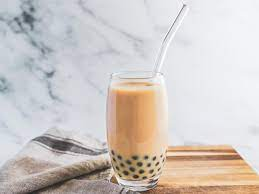
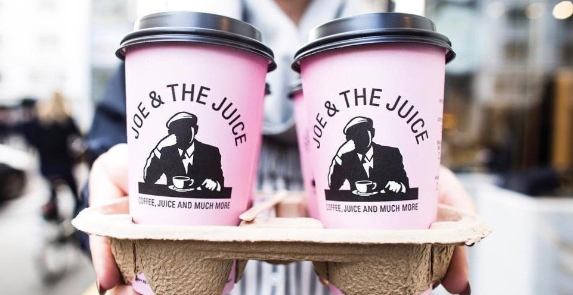
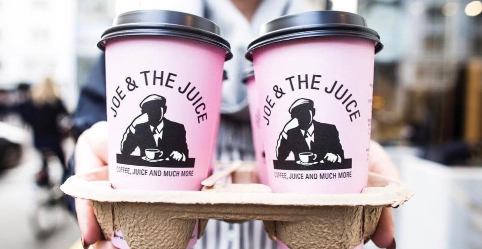

Brianne Yu
My name is Brianne Yu and I’m from San Francisco, California. I am currently a freshman at the University of California, Riverside and am majoring in creative writing. Throughout high school and into college I haven’t held many jobs but the jobs I’ve worked taught me a great deal. I’ve only worked in the food industry so I don’t have much experience outside of that field; nevertheless, I have still gained many skills and experiences I would’ve never had otherwise.
My first job was at a juice bar called Joe and the Juice. I was a senior in high school and looking for a summer job when my friend suggested we work together. However, because I was only looking for a summer job, I only worked there for two months. Although short, my time spent there was very valuable seeing as it was my first ever job. During my time there I learned how to be more responsible and independent in my action and decision making. I was responsible for managing my time, taking care of customers, making drinks to the customer’s satisfaction, and everything else that came in the service industry. As for independence, I had to get to and from work on my own, tracking bus times or calling Ubers, managing my money the way that I saw fit, and other tasks that having a job gives. However, this lasted a short amount of time and I was able to gain new skills while also enjoying my senior year.
My second job is the job I’m currently holding now at Peet’s coffee and tea. This job has taught me so much more than I could have imagined and although it’s still not a long term job or one I’ve held for a substantial amount of time, it’s still one I take pride in. I have been working at Peet’s for three months now and anticipate working there until I go to campus, which will hopefully be in five months making my working time there eight months. This being my second job, I am more comfortable with working with others in a food service setting and am able to learn other things that I may have missed in my first job when I was just learning to be comfortable in said environment. In this job I have learned how to stay calm in chaotic situations, deal with difficult customers, keep my cool under pressure, communicate with coworkers, voice my thoughts and opinions, and rely on others when I need. These are all skills that don’t only pertain to the food industry but can also be seen in every type of industry.
Experience
Barista
• Made espresso drinks
• Familiar with coffee making machinary
• Customer Service Skills
• Cashier experience
Education
University of California Riverside
Galileo Acadmey of Science and Tehcnology
Portfolio




